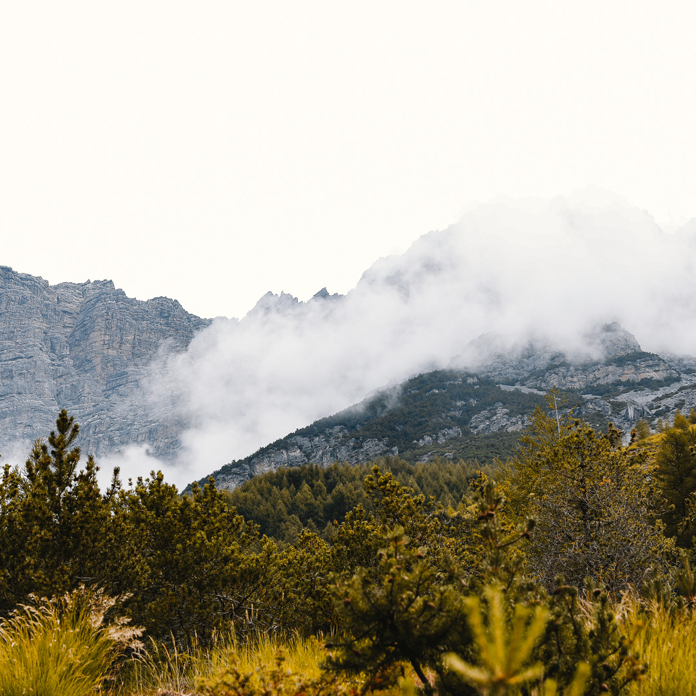
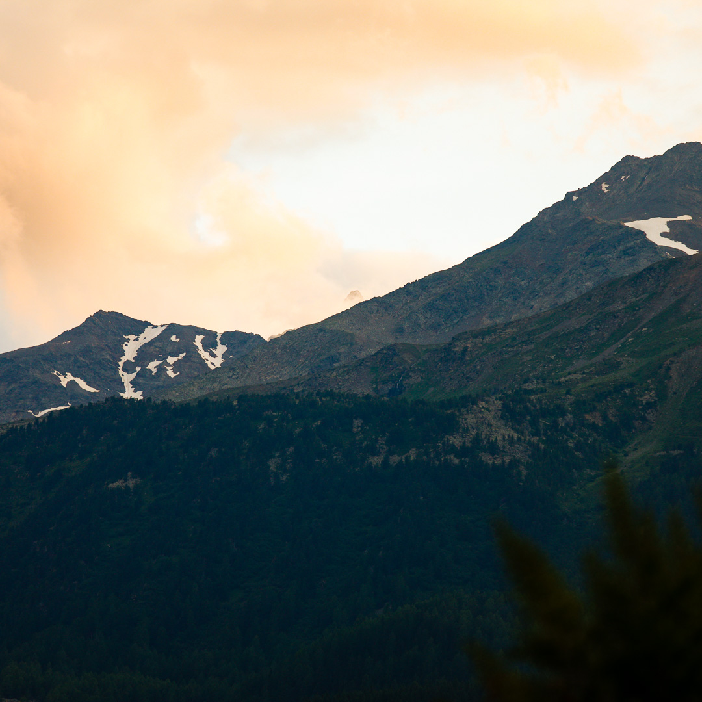
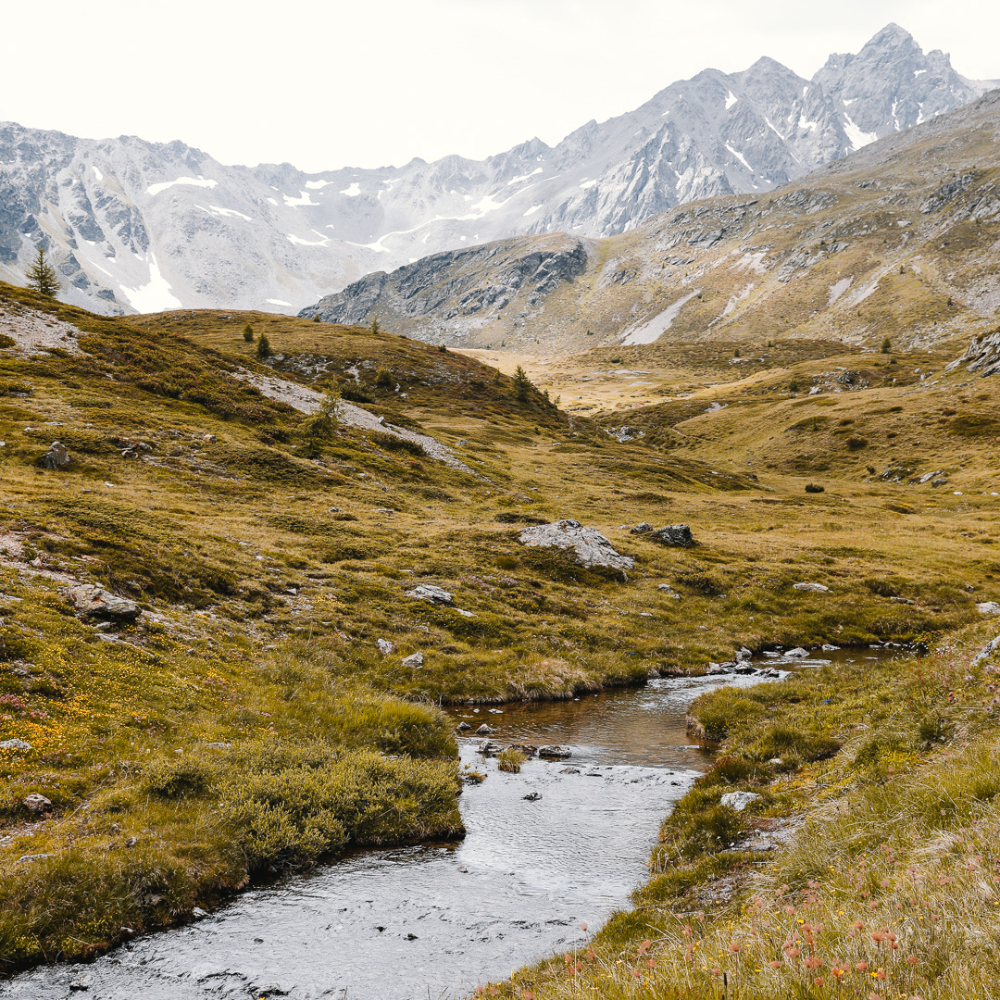
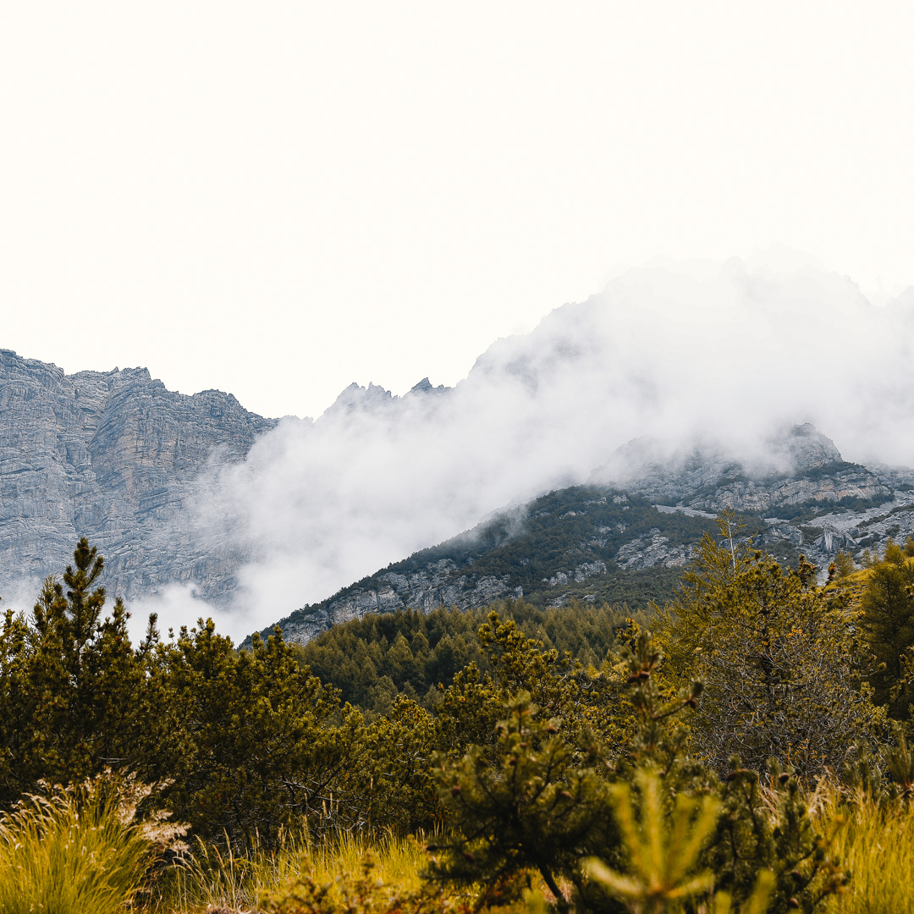
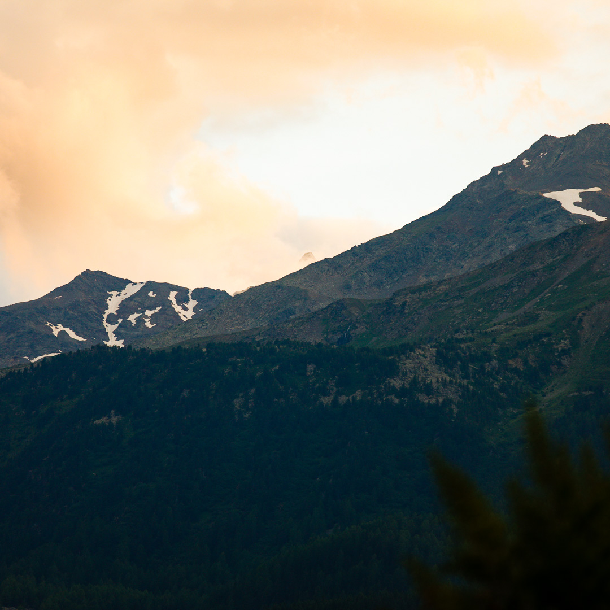
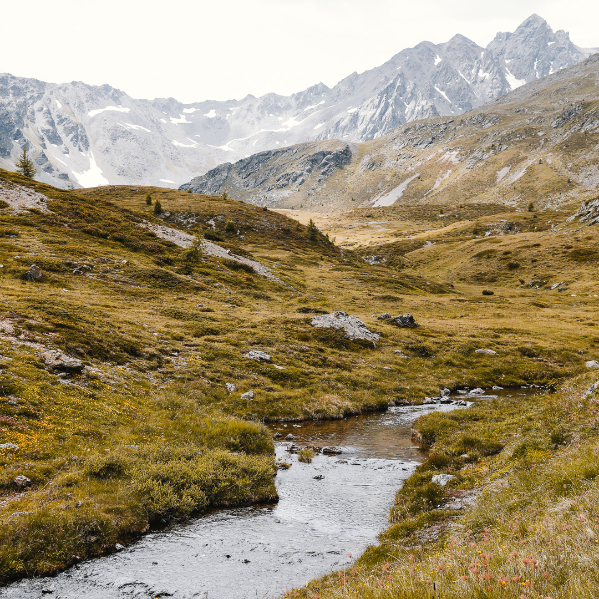

Rohan
- Computer Science student
- Year 3 InHolland Haarlem
- Interested in front-end (webdevelopment)
- Currently learning about Mobile development (Kotlin & Swift )
- Love photography
My top 5 strenghts
Relator
People exceptionally talented in the Relator theme enjoy close relationships with others. They find deep satisfaction in working hard with friends to achieve a goal.
Ideation
People exceptionally talented in the Ideation theme are fascinated by ideas. They are able to find connections between seemingly disparate phenomena.
Consistency
People exceptionally talented in the Consistency theme are keenly aware of the need to treat people the same. They crave stable routines and clear rules and procedures that everyone can follow.
Learner
People exceptionally talented in the Learner theme have a great desire to learn and want to continuously improve. The process of learning, rather than the outcome, excites them.
Responsibility
People exceptionally talented in the Responsibility theme take psychological ownership of what they say they will do. They are committed to stable values such as honesty and loyalty.
Playing with p5JS
Photos taken by me
Dolomites July 2019
 
